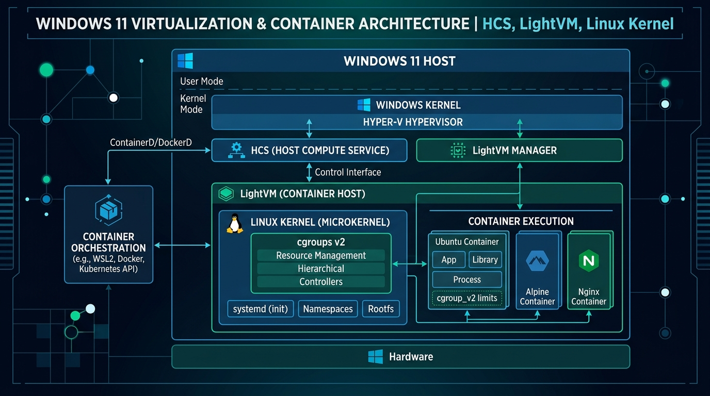

Docker on Windows with WSL 2: What Actually Happens Under the Hood
TL;DR: Running Docker on Windows via WSL 2 executes Linux containers inside a lightweight Hyper-V utility microVM using shared kernel cgroups v2 and namespaces. Storing code inside native WSL Linux paths (
/home/...) rather than Windows NTFS (/mnt/c/) eliminates cross-OS VirtioFS translation bottlenecks and restores full Linux file-system speed.
- 1. What Is WSL 2 Containerization?
- 2. Why It Matters: Evolution from Heavy VMs
- 3. The Architectural Stack
- 4. Native WSL Containers (wslc) vs. Docker Desktop
- 5. The Filesystem Performance Bottleneck
- 6. Building & Running with wslc
- 7. Programmatic Container Management (.NET)
- 8. Common Pitfalls & Troubleshooting
- 9. Frequently Asked Questions (FAQ)
- 10. Summary & Recommendations
1. What Is WSL 2 Containerization?
WSL 2 containerization is a hybrid virtualization architecture that executes Linux containers inside a dynamic Hyper-V LightVM using unified Linux kernel cgroups and namespaces.
For years, running Linux containers on Windows workstations required developers to navigate heavy abstractions. Early solutions relied on VirtualBox or full Hyper-V virtual machines running entire guest Linux operating systems with static RAM reservations. Later, Docker Desktop simplified the user experience with a tray application, but the underlying execution model remained opaque.
With Windows Subsystem for Linux 2 (WSL 2) and Microsoft's introduction of Native WSL Containers (wslc.exe in WSL 2.9.3+), Windows containerization has undergone a fundamental redesign. Rather than running isolated, resource-heavy guest VMs, modern Windows container setups utilize lightweight utility microVMs, direct Linux kernel cgroups v2, and shared host memory return mechanisms.
2. Why It Matters: Evolution from Heavy VMs
Understanding the architectural mechanics of WSL 2 helps engineers diagnose performance bottlenecks, optimize build pipelines, and choose between traditional Docker Desktop installations and zero-overhead native WSL container tools.
- Dynamic Memory Reclamation: Unlike traditional Hyper-V virtual machines that reserve fixed RAM blocks (e.g. 8 GB dedicated), WSL 2 dynamically expands and contracts memory, returning released Linux kernel pages to Windows host RAM.
- Shared Linux Kernel: All WSL 2 Linux distributions (Ubuntu, Debian, Alpine) share a single custom Microsoft-built Linux kernel. Container engines interact directly with this unified kernel.
- Near-Native Execution Speed: System calls execute directly against the Linux kernel rather than translating into Windows API calls (as was done in WSL 1).
3. The Architectural Stack
To understand how a containerized application executes on a Windows workstation, we can trace the boundaries from Win32 host applications down to isolated container processes:

3.1. Hyper-V LightVM & Host Compute Service (HCS)
WSL 2 communicates with the Windows host via Hyper-V Sockets (HV-Socket) and the Host Compute Service. The LightVM boots in less than one second and consumes a minimal baseline memory footprint.
3.2. Namespaces & cgroups v2 Enclosure
Containers inside WSL 2 are standard Linux processes isolated by Linux namespaces (`PID`, `NET`, `MNT`, `IPC`, `USER`) and resource-restricted by `cgroups v2`. They are not nested virtual machines.
4. Native WSL Containers (wslc) vs. Docker Desktop
WSL 2.9.3+ embeds native OCI container management directly into WSL via wslc.exe, giving developers a zero-overhead CLI alternative to commercial desktop tools:
| Feature | Native WSL Containers (wslc) |
Docker Desktop |
|---|---|---|
| Installation Model | Built into WSL (wsl --update --pre-release) |
Standalone installer & background daemon |
| Licensing & Cost | 100% Free & Open Source (Apache 2.0) | Paid subscription for enterprise teams |
| Resource Overhead | Zero background daemon footprint | Heavier baseline (Electron UI + daemon) |
| CLI Syntax | Mirrors Docker CLI (wslc run, wslc ps) |
Standard Docker CLI (docker run) |
| Programmatic API | Native .NET NuGet (Microsoft.WSL.Containers) |
Docker Engine REST API socket |
5. The Filesystem Performance Bottleneck
The single most frequent performance failure in WSL 2 setups is storing project files on the Windows NTFS drive (e.g. C:\Users\dev\project) and bind-mounting them into Linux containers.
Rule of thumb: Store your source code repositories inside the native WSL filesystem at
/home/username/projects/instead of/mnt/c/to achieve maximum I/O throughput.
6. Building & Running with wslc
To enable and test native WSL container execution:
# 1. Update WSL to pre-release build
wsl --update --pre-release
# 2. Build image from Dockerfile
wslc build -t demo-service .
# 3. Run detached container with port mapping 8080
wslc run -d --rm -p 8080:8080 --name app demo-service
# 4. Verify running containers
wslc container ps7. Programmatic Container Management (.NET)
Using the official Microsoft.WSL.Containers package, Windows C# applications can spawn and manage Linux containers programmatically:
using System;
using System.Threading.Tasks;
using Microsoft.WSL.Containers;
using var session = new WslContainerSession();
string imageName = "python:3.11-slim";
await session.PullImageAsync(imageName, new ImagePullProgress(p =>
{
Console.WriteLine($"Pulling: {p.Percentage}%");
}));
var createOptions = new ContainerCreateOptions
{
Image = imageName,
Name = "embedded-wsl-runner",
EnableGpu = true,
PortMappings = { new PortMapping(HostPort: 8080, ContainerPort: 80) }
};
using var container = await session.CreateContainerAsync(createOptions);
await container.StartAsync();
Console.WriteLine($"Container running (ID: {container.Id})");8. Common Pitfalls & Troubleshooting
8.1. High VMMEM Memory Consumption
If the `vmmem` process consumes excessive RAM, create a `.wslconfig` file in your Windows user directory (`C:\Users\username\.wslconfig`):
[wsl2]
memory=8GB
processors=4
autoMemoryReclaim=dropcache8.2. File-Watcher Failures (`inotify`)
Linux tools like `nodemon` or `webpack --watch` fail to detect file modifications when projects reside on `/mnt/c/` because NTFS file change events do not propagate cleanly over 9P/VirtioFS. Moving files to `/home/user/` fixes `inotify` triggers instantly.
9. Frequently Asked Questions (FAQ)
How does Docker work on Windows with WSL 2?
Docker on Windows leverages WSL 2 to execute containers directly inside a shared, lightweight Linux kernel microVM using native cgroups v2 and namespaces without needing full Hyper-V guest OS installs.
Why is git status or npm install slow in WSL 2?
Accessing files stored on Windows NTFS via /mnt/c/ forces cross-OS VirtioFS protocol translation. Moving project files into the native WSL ext4 filesystem (/home/username/) resolves the performance bottleneck.
What is native WSL containers (wslc)?
wslc.exe is Microsoft's native OCI container CLI built into WSL 2.9.3+. It allows developers to build, pull, and run Linux containers directly without requiring background Docker Desktop daemons.
Does WSL 2 use fixed RAM allocation?
No. WSL 2 utilizes Hyper-V LightVM dynamic memory allocation, returning unused RAM back to the Windows host operating system when Linux container workloads complete.
How do you programmatically control WSL containers in C#?
Developers can use the official Microsoft.WSL.Containers NuGet package in .NET applications to pull OCI images, map ports, enable GPU acceleration, and lifecycle manage containers directly.
10. Summary & Recommendations
- Keep code inside
/home/...: Avoid mounting/mnt/c/paths into containers to prevent severe I/O degradation. - Leverage VS Code Remote - WSL: Run your editor UI on Windows while attaching directly to Linux toolchains inside WSL 2.
- Evaluate
wslc: Consider native WSL containers for a zero-cost, lightweight container management setup.